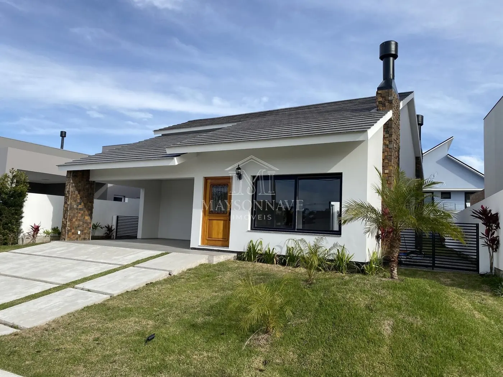
Compra, venda e avaliação de imóveis comerciais, residenciais e rurais. Cada imóvel analisado por perito avaliador antes de chegar até você.
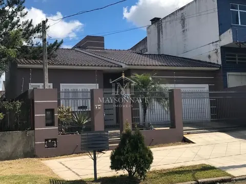
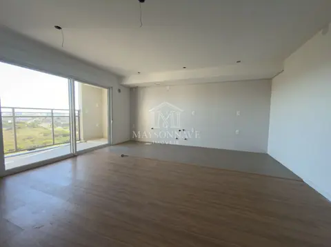
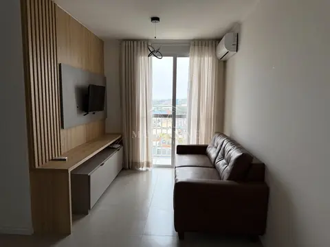
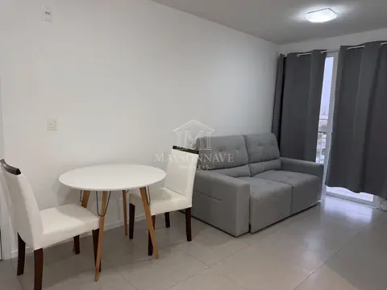
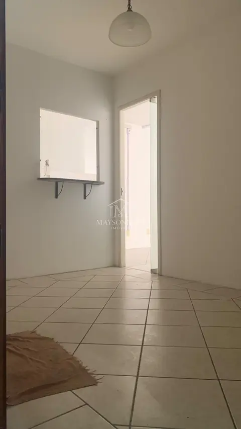
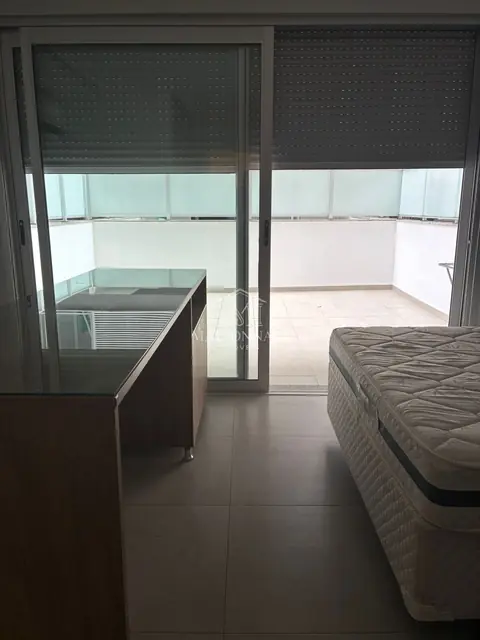
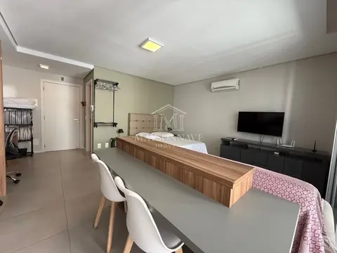
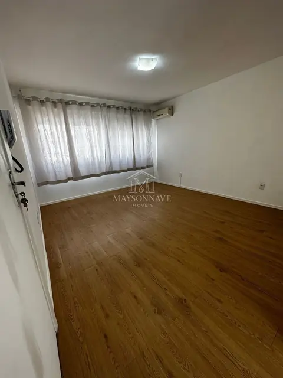
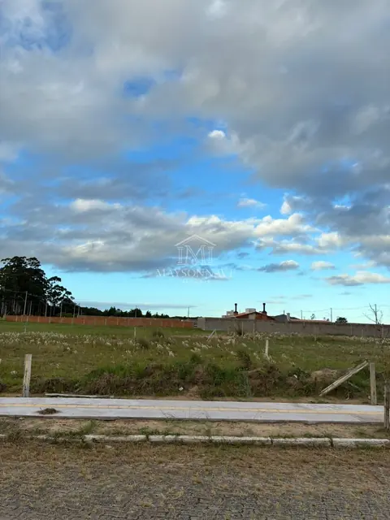
Nenhum imóvel com esses filtros. Ajuste a busca acima.
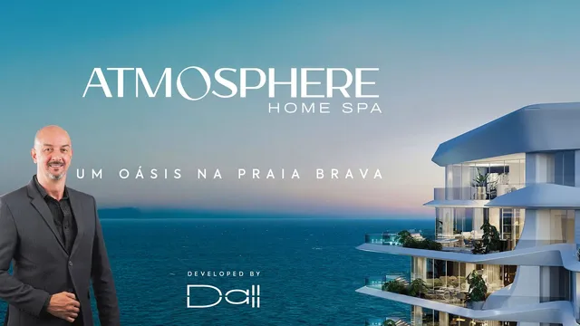
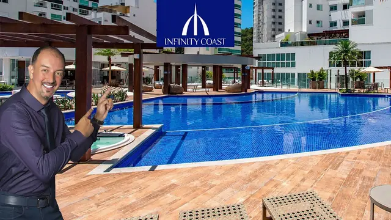